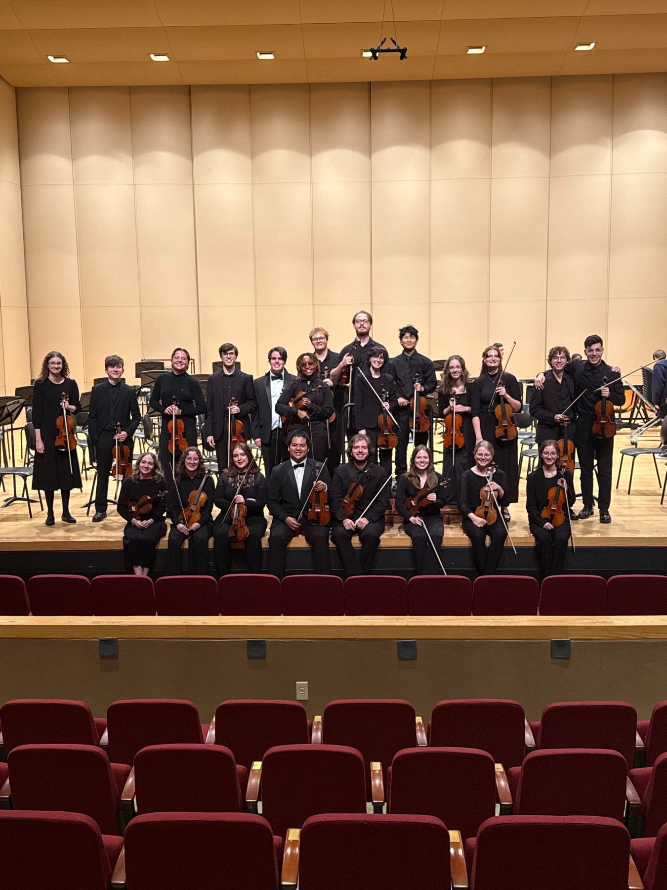

VIOLIN / PERFORMANCE
A LIFE IN
MUSIC.
Engineering and music look different on paper, but both reward teamwork, iteration, and grit.

PLAYING
TOGETHER.
At Butler University, I play violin in ensemble performances including the Butler Symphony Orchestra and Butler Ballet Orchestra.
Performance is a practice in preparation, listening to others, and contributing to a shared result.
PERFORMANCE MOMENTS